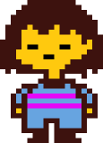

🎮 이 단원이 게임에서 쓰이는 곳 (언더테일·RPG)
스택 = 메뉴 뒤로가기에 씁니다. 타이틀 → 메인 → 설정 들어갈 때마다 push, "뒤로" 누를 때마다 pop해서 이전 화면으로 돌아가요. 샌즈가 나오는 메뉴처럼 화면이 겹겹이 쌓이는 구조가 스택이에요.

스택(Stack, 스택)
스택은 접시를 쌓는 것처럼 생각하면 돼요. 맨 위에만 넣고, 맨 위에서만 뺄 수 있어요. 그래서 나중에 넣은 게 먼저 나옵니다. LIFO(라이포)(Last In First Out, 라스트 인 퍼스트 아웃)라고 해요.
연산
- push(푸시): 맨 위(top, 탑)에 넣기
- pop(팝): 맨 위에서 꺼내기
활용
게임에서 메뉴 뒤로가기(설정 → 메인 → 타이틀처럼), 괄호 짝 맞추기, DFS(디에프에스, 깊이 우선 탐색), 함수 호출 시 복귀 주소 저장 등.

📌 이론(알고리즘) ↔ 파이썬 함수
스택 연산 push(맨 위에 넣기) → list.append(값) | pop(맨 위에서 꺼내기) → list.pop() (인자 없음)
대응 스택은 "맨 위에만 넣고, 맨 위에서만 뺀다"가 핵심이에요. 파이썬 list에서 맨 뒤를 "맨 위(top)"로 보면 됩니다.
리스트.append(값)- 맨 뒤에 넣기 → 스택의 push(푸시)에 대응해요. 접시를 쌓듯이 위에 하나 올리는 것과 같아요.
리스트.pop()- 괄호 안에 아무것도 안 쓰면 맨 뒤에서 하나 꺼내서 반환해요 → 스택의 pop(팝)에 대응합니다. "맨 위 접시"를 들어 올리는 것과 같아요.
왜 list만으로 되나요? 스택은 "맨 끝"에만 넣고 빼면 되기 때문에, list의 append와 pop()이 모두 O(1)로 동작해요. 별도 모듈 없이 리스트만으로 스택을 구현하는 게 파이썬에서 일반적입니다.
스택에 넣을 때 append, 맨 위에서 꺼낼 때? (빈칸 두 개)
첫 빈칸: 두 번째:
문제 및 해설
정답: ④ D,B,C,A
풀이 단계
- 스택은 LIFO이므로, "맨 나중에 넣은 것이 맨 먼저" 나옵니다. push A → B → C → D 순이면, pop 순서는 반드시 D → C → B → A입니다.
- ④에서 D가 먼저 나온 뒤 B가 나온다고 했어요. D 다음에 나올 수 있는 건 "그때 스택 맨 위에 있던 것"뿐이에요. D를 pop한 직후 맨 위에는 C가 있으므로, 다음은 반드시 C가 나와야 합니다. 따라서 D 다음에 B가 나오는 순서(D,B,C,A)는 불가능합니다.
실수하기 쉬운 점 "D가 먼저 나왔으니 나머지는 아무 순서나 되지 않을까?"라고 생각하기 쉽습니다. 스택에서는 pop할 때마다 "현재 맨 위"만 꺼낼 수 있어요. 그 순서가 정해져 있습니다.
한 줄 요약 스택에서 나올 수 있는 순서는 "넣은 순서의 역순"만 가능해요. D 다음에는 반드시 C가 나와야 하므로 ④는 불가능. 더 많은 예제 →
문제 및 답 확인
답 보기
정답: B, C (꺼낸 순서)
풀이 push A → 스택 [A]. push B → [A, B](맨 위=B). pop → B가 나옴(첫 번째로 꺼낸 값). push C → [A, C]. pop → C가 나옴(두 번째로 꺼낸 값). 따라서 지금까지 꺼낸 값은 B, C입니다. 스택은 맨 위에서만 꺼내므로 "나중에 넣은 것"이 먼저 나와요.
도전과제
풀어 본 뒤 정답을 펼쳐 확인하세요.
정답 보기
정답: 메인
스택 [타이틀, 메인, 설정, 오디오]에서 pop → 오디오 나감(현재=설정). pop 한 번 더 → 설정 나감(현재=메인). "뒤로" 두 번 후 현재 화면은 메인이에요.
정답 보기
정답: A 한 개
push A,B,C → [A, B, C](맨 위=C). pop → C 제거, [A, B]. pop → B 제거, [A]. 따라서 남은 값은 A뿐이에요.
위 실습은 이 강의(스택)에서 배운 push·pop, 즉 list.append·list.pop()을 쓰는 예제입니다. 손으로 해보려면 실습: 스택 (손으로 하기).